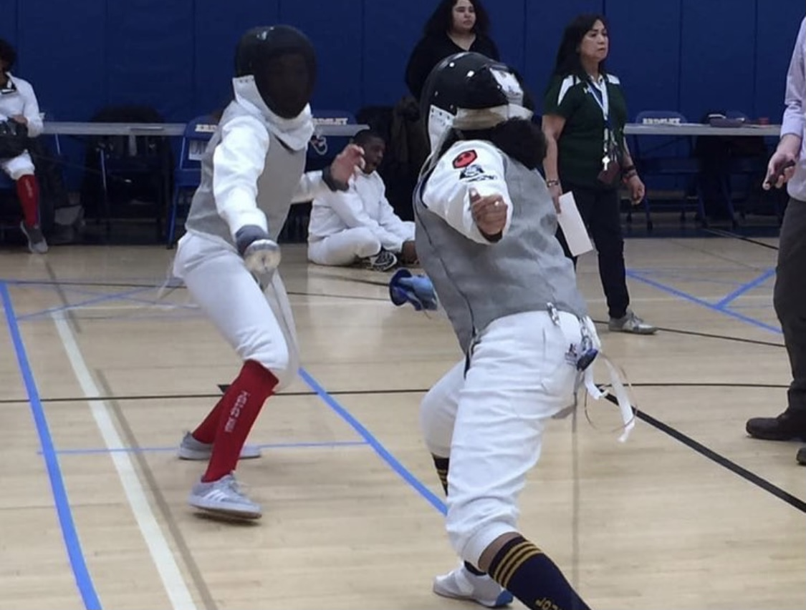

PROJECTS
Check out some of my favorite projects that I've done in the past few years!

FENCING
Growing up in a family of older guy cousins, a lot of the things that I do today are a result of their influence. When I was in middle school, I saw my two older cousin's at fencing practice and was amazed by the sport and environment. Grabbing a few friends with me, I decided to join the fencing team in 8th grade and have been a member of it since. Throughout my time on the team, I won MIP or Most Improved Player twice (2018-2019 & 2019-2020).